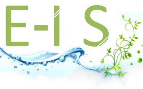

<div id="hidden" style="display:none;">
    <div id="header">
        <div id="header-left">
            <p>Outil de collecte de données halieutiques > <b>Présentation fonctionnelle</b></p>
        </div>
        <div id="header-right">
            
            
            
        </div>
        <div id="footer-left"></div>
        <div id="footer-right"></div>
    </div>
</div>

<div class="reveal">
    <!-- Any section element inside of this container is displayed as a slide -->
    <div class="slides">
        <section data-markdown data-separator-vertical="---">
            <script type="text/template">
                
                ### Outil de collecte de données halieutiques
                # Présentation fonctionnelle

                <br/>

                [<i class="fab fa-github"></i> blavenie](https://www.github.com/blavenie)
                |
                [<i class="fab fa-github"></i> e-is.pro](https://www.e-is.pro)
                |
                [<i class="fa fa-globe"></i> www.sumaris.net](https://www.sumaris.net)
            </script>
        </section>

        <section>
            <section data-markdown>
                <textarea data-template>
                    # Fonctionnalités de saisie

                    - Observation **en mer**
                      * Auto-échantillonnage
                      * **Logbooks** / Fiche de pêche
                    - Observation **au débarquement**
                      * Échantillonnage en criée
                      * Échantillonnage biologique (Imagine)
                      * Calendrier d'activité mensuelle

                    ---

                    # Mode de saisie

                    Saisie **terrain** ou au **bureau**

                    Saisie **hors-ligne**, avec synchronisation

                    Compatible navigateurs récents et **Android**

                    ---

                    # Administration des **protocoles**

                    Gestion des **programmes** et **stratégies** de collecte

                    Gestion des champs **personnalisables** (PSFM)

                    ---

                    # Administration des **référentiels**

                    - Gestion des utilisateurs
                    - Gestion du référentiel des **navires**
                    - Gestion des **espèces** commerciales et scientifiques,
                      * dont les coefficients de conversion
                    - Gestion des **PSFM**, des lieux, etc.

                    ---

                    # **Extraction** (1/2)

                    - Prévisualisation rapide
                    - Multi-onglets
                    - **Filtrage** sur n'importe quel champs
                    - Téléchargement (CSV / ZIP)

                    ---

                    # Extraction (2/2)

                    - Création de produits, agrégés ou non
                    - Actualisation automatique des produits
                    - Cartographie des produits géographiques agrégés

                    ---

                    # Liens

                    - Documentation, manuel utilisateur :<br/>
                    https://gitlab.ifremer.fr/sih/sumaris/sumaris-doc


                </textarea>
            </section>
        </section>
    </div>
</div>
